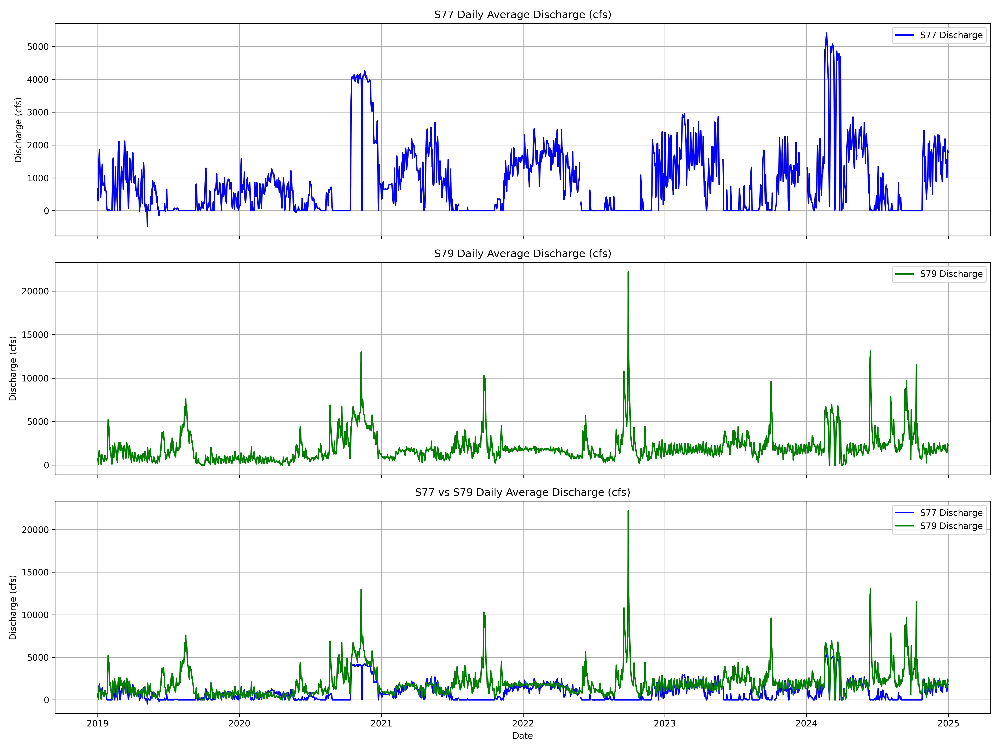

S77 Analysis
Focusing on Station with the Most Data Available First, to Observe Relationships Between Data
1. Isolating S77 Station Data from Datasets
Code below loads the master file of all stations and all available Sentinel-2 images, with NDCI and FAI calculated. This code isolates only the S77 station for analysis, and drops dates with no imagery for the station.
import pandas as pd
# Load the CSV file
file_path = "Extracted_Indices_Final.csv"
df = pd.read_csv(file_path)
# Strip any extra whitespace in column names
df.columns = df.columns.str.strip()
# Filter for Station_Id == 'S77'
df_s77 = df[df['Station_Id'] == 'S77']
# Drop rows where 'ndci' or 'fai' are missing
df_s77 = df_s77.dropna(subset=['ndci', 'fai'])
# Preview the result
print(df_s77.head())
# Export to a new CSV
output_path = "Extracted_Indices_S77.csv"
df_s77.to_csv(output_path, index=False)
Results in 216 points of data where imagery was usable imagery was captured at the S77 station.
Code below focuses on the master water quality file, DBHYDRO_WQ_AllStations_Converted.csv, to isolate S77 Chloropyll-a data.
import pandas as pd
# Load the CSV file
file_path = "DBHydro_WQ_AllStations_Converted.csv"
df = pd.read_csv(file_path)
# Strip any extra whitespace in column names
df.columns = df.columns.str.strip()
# Filter for Station ID == 'S77'
df_s77 = df[df['Station ID'] == 'S77']
# Filter for only Chlorophyll-a samples
df_s77 = df_s77[df_s77['Test Name'] == 'CHLOROPHYLL-A(LC)']
# Preview the result
print(df_s77.head())
# Export to a new CSV
output_path = "S77_Chlorophylla_Data.csv"
df_s77.to_csv(output_path, index=False)
print(df_s77.shape)
There are some sample codes that I am going to have to filter through, will use code to generate a list of the unique sample codes under 'Sample Type New'. Unique Values are SAMP, FCEB, EB, and RS. Will check DBHYDRO for what these mean.
SAMP = Sample
FCEB = Field Cleaned Equipment Blank
EB = Equipment Blank
RS = Replicate Sample
Will filter out FCEB, EB, and RS.
# Load the CSV file
file_path = "S77_Chlorophylla_Data.csv"
df = pd.read_csv(file_path)
# Strip any extra whitespace in column names
df.columns = df.columns.str.strip()
# Filter for only Chlorophyll-a samples
df_s77 = df_s77[df_s77['Sample Type New'] == 'SAMP']
# Preview the result
print(df_s77.head())
# Export to a new CSV
output_path = "S77_Chlorophylla_Data_SamplesOnly.csv"
df_s77.to_csv(output_path, index=False)
print(df_s77.shape)
New sample size is 275x47, filtered out 205 samples.
Visualizing s77 Chlorophyll-a Data:
import pandas as pd
import matplotlib.pyplot as plt
# Load the filtered dataset
file_path = "S77_Chlorophylla_Data_SamplesOnly.csv"
df = pd.read_csv(file_path)
# Strip any extra whitespace in column names
df.columns = df.columns.str.strip()
# Convert Collection_Date to datetime
df['Collection_Date'] = pd.to_datetime(df['Collection_Date'], errors='coerce')
# Drop rows with invalid or missing dates or values
df = df.dropna(subset=['Collection_Date', 'Value'])
# Sort by date
df = df.sort_values('Collection_Date')
# Plot
plt.figure(figsize=(12, 6))
plt.plot(df['Collection_Date'], df['Value'], marker='o', linestyle='-')
plt.xlabel('Collection Date')
plt.ylabel('Chlorophyll-a Concentration')
plt.title('Chlorophyll-a Time Series at S77')
plt.grid(True)
plt.tight_layout()
plt.show()

2. Merging Satellite Data with Discharge and Temperature Data
Due to data availability, datasets were merged on 2-day, 3-day, and 5-day windows. This allowed for more data pairings while trying to keep the dates and results of water date close to the date of satellite imagery collection.
Code below is for 2-day window, 3 and 5-day were changed by replacing the number 2s in Step 6.
# Import required libraries
import pandas as pd
from datetime import timedelta
# Step 1: Load the satellite indices CSV
satellite_fp = "Extracted_Indices_S77.csv" # Replace with your full path if needed
sat_df = pd.read_csv(satellite_fp)
# Step 2: Load the chlorophyll-a samples CSV
chl_fp = "S77_Chlorophylla_Data_SamplesOnly.csv" # Replace with your full path if needed
chl_df = pd.read_csv(chl_fp)
# Step 3: Clean column names by stripping whitespace
sat_df.columns = sat_df.columns.str.strip()
chl_df.columns = chl_df.columns.str.strip()
# Step 4: Convert date columns to datetime format
sat_df['date'] = pd.to_datetime(sat_df['date'], errors='coerce')
chl_df['Collection_Date'] = pd.to_datetime(chl_df['Collection_Date'], errors='coerce')
# Step 5: Initialize a new column for matched Chlorophyll-a values
sat_df['Chlorophylla_Measurement'] = None
# Step 6: Iterate through each satellite record and find chlorophyll values within ±5 days
for idx, sat_row in sat_df.iterrows():
sat_date = sat_row['date']
window_start = sat_date - timedelta(days=2)
window_end = sat_date + timedelta(days=2)
# Get a copy of the subset within the ±2 day window
matches = chl_df[
(chl_df['Collection_Date'] >= window_start) &
(chl_df['Collection_Date'] <= window_end)
].copy()
if not matches.empty:
# Calculate absolute time difference to satellite date
matches['TimeDiff'] = (matches['Collection_Date'] - sat_date).abs()
# Choose the closest-in-time chlorophyll sample
# If multiple samples, the sample closest to the imagery collection date will be selected
closest_sample = matches.loc[matches['TimeDiff'].idxmin()]
sat_df.at[idx, 'Chlorophylla_Measurement'] = closest_sample['Value']
# Step 7: Drop satellite rows that did not match any chlorophyll-a samples
sat_df = sat_df.dropna(subset=['Chlorophylla_Measurement'])
# Step 8: Save to new CSV
output_fp = "S77_Satellite_Chlorophylla_for_ThresholdingValues_2DayWindow.csv"
sat_df.to_csv(output_fp, index=False)
print(f"✅ Merged dataset saved to: {output_fp}")
print(sat_df.shape)
Accuracy results of the 2-day, 3-day, and 5-day windows:
2-day Window:
FAI ~ Chlorophyll-a: y = 1.1615 * x + 38.0137
NDCI ~ Chlorophyll-a: y = 0.0021 * x + -0.0458
Index thresholds for 40.0 µg/L Chlorophyll-a:
FAI Threshold: 84.4721
NDCI Threshold: 0.0398
3-day Window:
FAI ~ Chlorophyll-a: y = 0.3801 * x + 50.1661
NDCI ~ Chlorophyll-a: y = 0.0020 * x + -0.0261
Index thresholds for 40.0 µg/L Chlorophyll-a:
FAI Threshold: 65.3719
NDCI Threshold: 0.0535
5-day Window:
FAI ~ Chlorophyll-a: y = -0.7844 * x + 56.5624
NDCI ~ Chlorophyll-a: y = 0.0017 * x + -0.0205
Index thresholds for 40.0 µg/L Chlorophyll-a:
FAI Threshold: 25.1850
NDCI Threshold: 0.0470


3. Visualize Discharge Flows
import pandas as pd
import matplotlib.pyplot as plt
# Load the data
file_path = r"C:\Users\Socce\Downloads\S79andS77_DailyAverageDischargeData.csv"
df = pd.read_csv(file_path)
# Clean and parse
df.columns = df.columns.str.strip()
df['Date'] = pd.to_datetime(df['Date'], errors='coerce')
# Filter and pivot
filtered_df = df[df['Station'].isin(['S77_S', 'S79_TOT'])]
pivot_df = filtered_df.pivot(index='Date', columns='Station', values='Data Value')
# Set up subplots
fig, axs = plt.subplots(3, 1, figsize=(16, 12), sharex=True)
# Plot S77 only
axs[0].plot(pivot_df.index, pivot_df['S77_S'], color='blue', label='S77 Discharge')
axs[0].set_title('S77 Daily Average Discharge (cfs)')
axs[0].set_ylabel('Discharge (cfs)')
axs[0].legend()
axs[0].grid(True)
# Plot S79 only
axs[1].plot(pivot_df.index, pivot_df['S79_TOT'], color='green', label='S79 Discharge')
axs[1].set_title('S79 Daily Average Discharge (cfs)')
axs[1].set_ylabel('Discharge (cfs)')
axs[1].legend()
axs[1].grid(True)
# Plot both overlaid
axs[2].plot(pivot_df.index, pivot_df['S77_S'], label='S77 Discharge', color='blue')
axs[2].plot(pivot_df.index, pivot_df['S79_TOT'], label='S79 Discharge', color='green')
axs[2].set_title('S77 vs S79 Daily Average Discharge (cfs)')
axs[2].set_xlabel('Date')
axs[2].set_ylabel('Discharge (cfs)')
axs[2].legend()
axs[2].grid(True)
# Layout
plt.tight_layout()
plt.savefig("Discharge_3Subplots.png", dpi=300)
print(f"\nPlot saved successfully: {"Discharge_3Subplots.png"}")
plt.show()

4. Inspect Water Temperature Data Frame
import pandas as pd
# Load both CSVs
df1 = pd.read_csv("Stations_WaterTemp.csv")
df2 = pd.read_csv("S79_WaterTemp.csv")
# Clean column names
df1.columns = df1.columns.str.strip()
df2.columns = df2.columns.str.strip()
# Combine the two dataframes
combined_df = pd.concat([df1, df2], ignore_index=True)
combined_df = combined_df.drop_duplicates()
# Drop the 'S77_T' row
combined_df = combined_df[combined_df['Station ID'] != 'S77_T']
#Dropping extreme outlier in data that is not probably (saying over 40 degrees C measured)
# Remove outliers above 40 °C
combined_df = combined_df[combined_df['Value'] <= 40]
# Display combined result
print("=== HEAD OF COMBINED DATAFRAME ===")
display(combined_df.head())
print("\n=== TAIL OF COMBINED DATAFRAME ===")
display(combined_df.tail())
# Print updated Station ID counts
print("\n=== UPDATED SAMPLE COUNT PER STATION ID ===")
print(combined_df['Station ID'].value_counts())
combined_df.to_csv("WaterTemp_AllStations.csv", index=False)

5. Visualize Water Temperature Data
Creating Time Series Plots of Water Temperature for Each Station
Stations in order from Lake Okeechobee down through the Caloosahatchee River and to the Caloosahatchee River Estuary
import pandas as pd
import matplotlib.pyplot as plt
# Load the merged dataset
file_path = "WaterTemp_AllStations.csv"
df = pd.read_csv(file_path)
# Clean column names
df.columns = df.columns.str.strip()
# Parse Collection_Date to datetime
df['Collection_Date'] = pd.to_datetime(df['Collection_Date'], errors='coerce')
# Filter date range
mask = (df['Collection_Date'] >= '2019-01-01') & (df['Collection_Date'] <= '2024-12-31')
df = df[mask]
# Desired station order
station_order = ['S77', 'S78', 'S79', 'CES02', 'CES03', 'CES04', 'CES05', 'CES06', 'CES07', 'CES08', 'CES09']
# Set up subplots
fig, axs = plt.subplots(len(station_order), 1, figsize=(18, 24), sharex=True)
for i, station in enumerate(station_order):
station_df = df[df['Station ID'] == station]
axs[i].scatter(station_df['Collection_Date'], station_df['Value'], s=10, alpha=0.7)
axs[i].set_title(f"{station} - Water Temperature")
axs[i].set_ylabel("Temp (°C)")
axs[i].set_xlabel("Collection Date") # ✅ ADD X-AXIS LABEL TO EACH SUBPLOT
axs[i].grid(True)
axs[i].tick_params(axis='x', rotation=45)
# Final layout and save
plt.tight_layout()
plt.savefig("AllStationsTemps_IndividualSubplots.png", dpi=300, bbox_inches='tight')
plt.show()
Creating Combined Time Series Plot of Water Temperature from Each Station
import pandas as pd
import matplotlib.pyplot as plt
# Load combined dataset
file_path = "WaterTemp_AllStations.csv"
df = pd.read_csv(file_path)
# Clean column names
df.columns = df.columns.str.strip()
# Parse Collection_Date
df['Collection_Date'] = pd.to_datetime(df['Collection_Date'], errors='coerce')
# Filter date range
mask = (df['Collection_Date'] >= '2019-01-01') & (df['Collection_Date'] <= '2024-12-31')
df = df[mask]
# Desired station plotting order
station_order = ['S77', 'S78', 'S79', 'CES02', 'CES03', 'CES04', 'CES05', 'CES06', 'CES07', 'CES08', 'CES09']
# Plot
plt.figure(figsize=(18, 8))
for station in station_order:
station_df = df[df['Station ID'] == station]
plt.plot(station_df['Collection_Date'], station_df['Value'], label=station, linewidth=1.5)
# Formatting
plt.title("Water Temperature Time Series (2018–2024)")
plt.xlabel("Collection Date")
plt.ylabel("Temperature (°C)")
plt.legend(title="Station ID", bbox_to_anchor=(1.05, 1), loc='upper left')
plt.grid(True)
plt.tight_layout()
plt.xticks(rotation=45)
plt.savefig("AllStationsTemps_CombinedPlot.png", dpi=300, bbox_inches='tight')
plt.show()